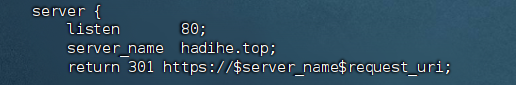

编写于2025年06月07日 修订于2025年10月28日 | 来源：https://www.myouone.xyz
root用户任意目录执行
# 安装 nginx 需要先将官网下载的源码进行编译，编译依赖 gcc 环境 yum install gcc-c++ # pcre是一个perl库，包括perl兼容的正则表达式库，nginx的http模块使用pcre来解析正则表达式，所以需要安装pcre库 yum install -y pcre pcre-devel # zlib库提供了很多种压缩和解压缩方式nginx使用zlib对http包的内容进行gzip，所以需要安装 yum install -y zlib zlib-devel # nginx 不仅支持 http 协议，还支持 https（即在ssl协议上传输http），所以需要在 Centos 安装 OpenSSL 库 yum install -y openssl openssl-devel
# 任意目录可执行，如：/data目录 cd /data # 下载nginx wget https://nginx.org/download/nginx-1.22.1.tar.gz # 解压 tar -zxvf nginx-1.22.1.tar.gz # 进入解压后的目录 cd nginx-1.22.1/ # 配置（带有https模块） ./configure --prefix=/usr/local/nginx --with-http_stub_status_module --with-http_ssl_module # 编译 make # 安装 make install # 进入安装后的启动目录 cd /usr/local/nginx/sbin # 启动nginx ./nginx
netstat -ntlp
浏览器访问http://ip
# 关闭nginx服务 ./nginx -s stop # 配置nginx环境变量 vim /etc/profile export PATH=$PATH:/usr/local/nginx/sbin # 让文件生效 source /etc/profile
# 进入nginx配置文件所在目录
cd /usr/local/nginx/conf
# 打开nginx配置文件
vim nginx.conf
# 找到“server { listen 80;”
# 修改配置
server_name 你的域名;
return 301 https://$server_name$request_uri;
# 保存退出，重载配置，重启也可以
cd /usr/local/nginx/sbin
./nginx -s reload

https我已经在springboot中配置，所以在nginx里边不需要配置https的相关内容。
可在浏览器中验证http重定向到https的配置效果。
因为https流量直接通过Springboot服务，并不经过nginx，所有要想配置相关内容，需要直接配置到Springboot项目中。
server:
compression:
enabled: true # 启用压缩
mime-types: # 压缩的文件类型
- text/html
- text/css
- application/javascript
- application/json
min-response-size: 1024 # 最小压缩阈值（字节）
excluded-user-agents: false # 不排除任何用户代理
验证
浏览器访问相关页面，右键点击 → 检查 → 点击Network，在Name列表中选择一个静态资源，如这里是.html静态文件，然后在后边的Headers的Response Headers里边如果有Content-Encoding的相关内容，就表示压缩生效了。
https://blog.csdn.net/weixin_47110096/article/details/135741324